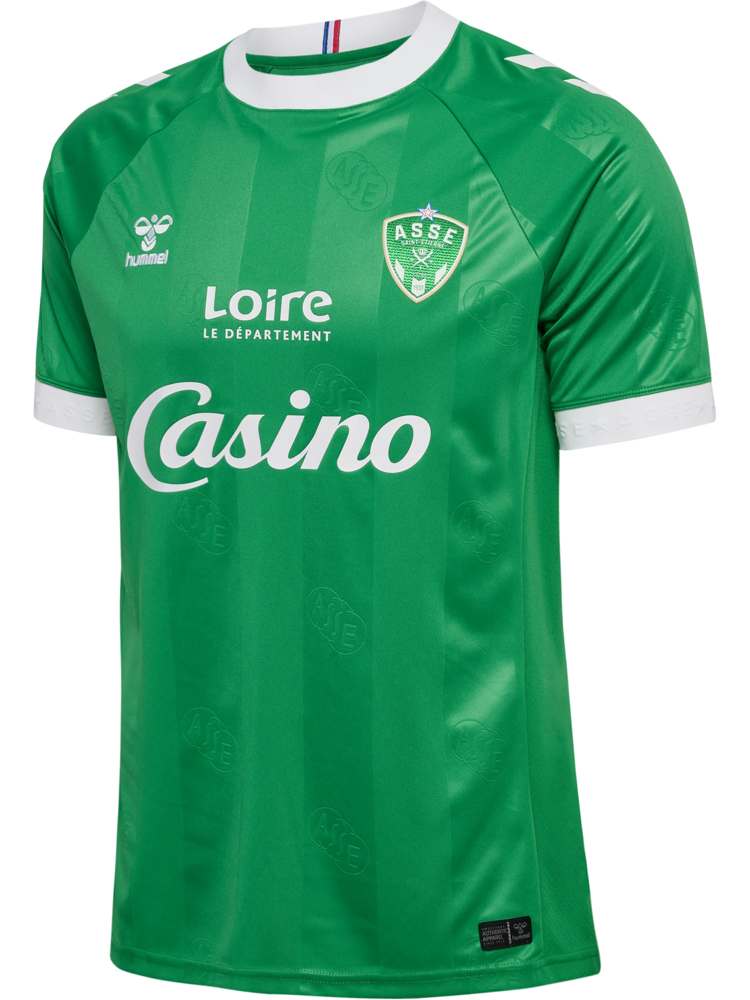
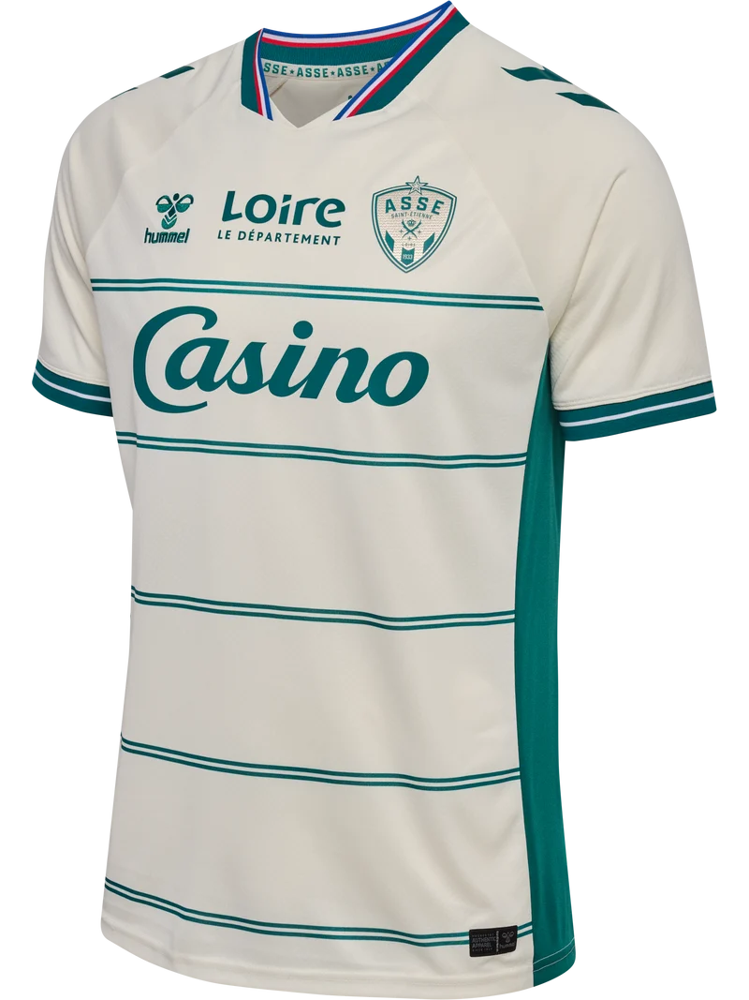
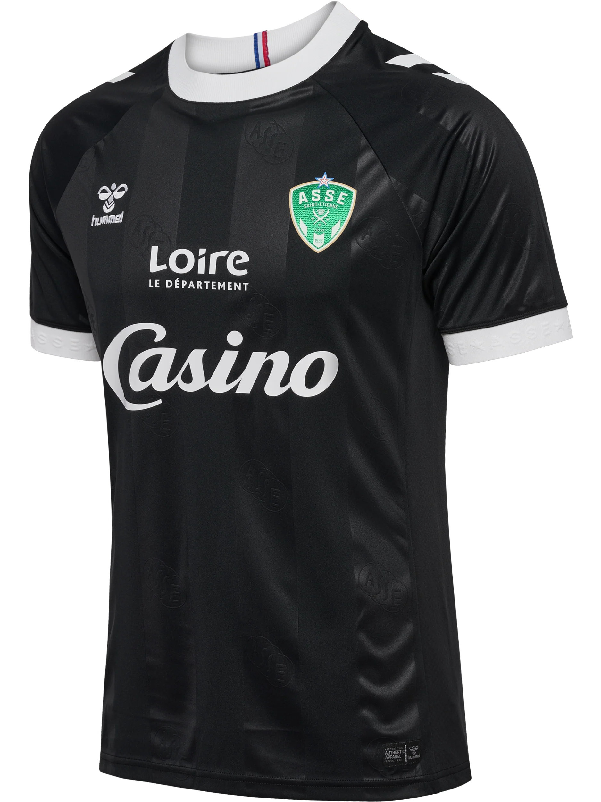

Pour la saison 2026-2027, l'AS Saint-Étienne présente ses nouveaux maillots en collaboration avec Hummel. Le maillot domicile conserve le vert traditionnel du club, le maillot extérieur adopte un blanc élégant, et le maillot third arbore un vert kaki original. Conçus pour allier style, confort et performance, ces maillots permettent aux joueurs de briller sur le terrain et aux supporters de porter fièrement les couleurs de l’ASSE.


